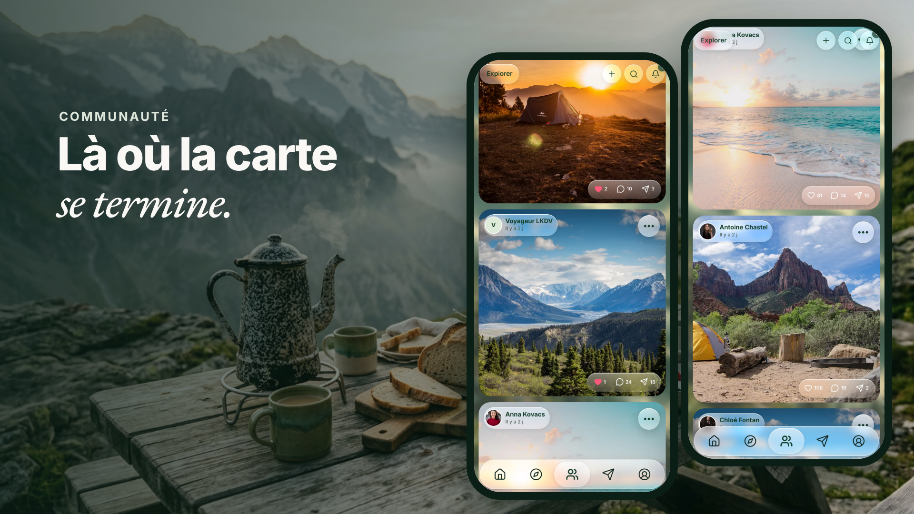
01: Le fil réel
0 à 3,75 s
Image 0 complète : le titre est déjà posé ; un seul fil vertical de la Communauté défile lentement, le post de Maya s'arrête au centre, les voisins coupés en haut et en bas.
À lire « Là où la carte se termine. » (0-3,5 s)
Son piste calme ; tic de défilement
Source style des posts : `docs/audit/communaute-v2-2026-11-08/**` ; photo du post à remplacer par une photo libre des Torres

02: Le pouce réel
3,75 à 5,62 s
RIME 1 : le pouce de Léa touche le post de Maya ; le post grandit et devient le carnet.
À lire le post (0,2-1,2 s) ; le tap (1,3 s)
Son tap
Source post communauté
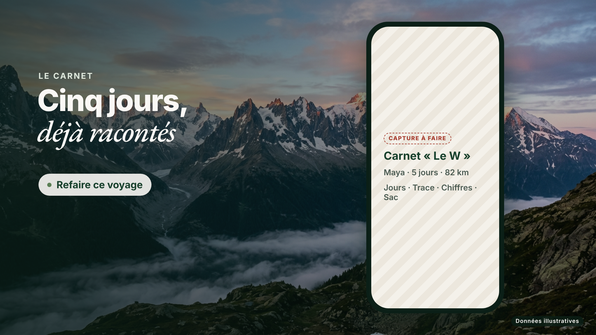
03: Le carnet de Maya partiel
5,62 à 7,5 s
Le carnet de Maya : jours, trace du W, chiffres, sac. Léa touche « Refaire ce voyage ».
À lire le carnet (0,2-1,0 s) ; « Refaire ce voyage » (1,0-1,8 s)
Son whoosh doux
Source fiche carnet réelle (`prod3/*`) ; carnet de démo « Le W » à créer ; passage carnet → Compas = `prepareActivityFromTrail.ts` (libellé à confirmer)

04: « On le fait ? » capture à faire
7,5 à 9,38 s
L'écran /messagerie : la bulle de Léa porte l'aperçu du carnet de Maya ; Noé et Sam répondent.
À lire l'aperçu (0,1-0,6 s) ; les deux réponses (0,6-1,8 s)
Son deux petits sons de message
Source `/messagerie` ; capture à faire

05: La phrase capture à faire
9,38 à 11,25 s
Le Compas « Où » : la phrase se tape en une mesure, le bouton s'active ; au clic (11,1 s) le bouton s'ouvre en iris sur le globe, et la piste s'ouvre avec lui (11,25 s).
À lire la phrase (0,1-1,3 s) ; le bouton actif (1,3-1,8 s)
Son frappe ; clic ; la piste s'ouvre
Source Compas « Où » réel (capture à refaire avec cette phrase et le bouton actif)
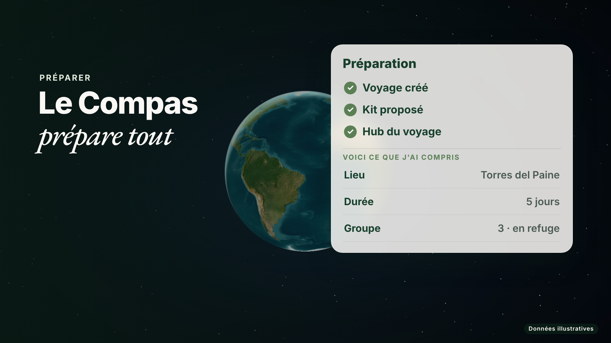
06: Voyage, kit, hub capture à faire
11,25 à 13,12 s
Pendant la plongée satellite vers la Patagonie, la préparation visible coche « Voyage · Kit · Hub », puis trois lignes de « Voici ce que j'ai compris ».
À lire les trois coches (0,1-0,7 s) ; les lignes (0,7-1,8 s)
Son un pop par coche
Source `CompasPrep` ; libellés `compas-steps.fr.ts` ; capture à faire ; vol satellite cuit `assets/map/w-patagonie.mp4`
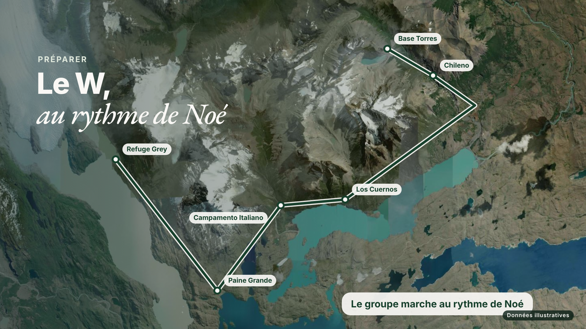
07: Le W capture à faire
13,12 à 16,88 s
La plongée se pose ; le W se trace en forest de refuge en refuge (un pop par étape, sur les temps), puis une seule ligne : « Le groupe marche au rythme de Noé ».
À lire le tracé (0-2,0 s) ; « au rythme de Noé » (2,0-3,7 s)
Son un pop par refuge sur les temps
Source carte satellite réelle (Esri) ; étapes géocodées (OSM) ; panneau « Nous · Équipe » réel
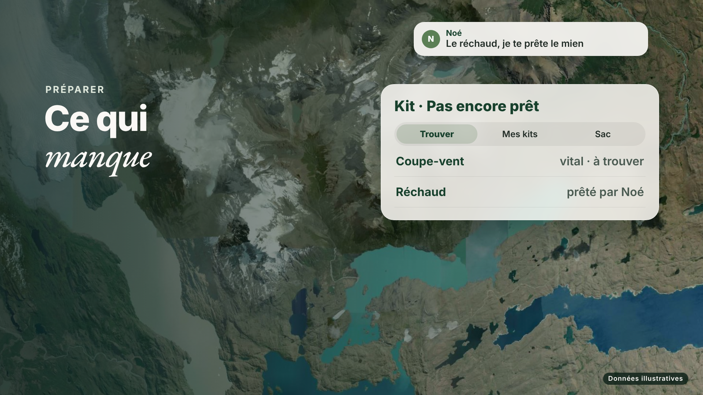
08: Le coupe-vent manque capture à faire
16,88 à 18,75 s
OBJET-HÉROS : « Coupe-vent · vital · à trouver ». Noé règle le réchaud par message : prêt dans le groupe.
À lire « Coupe-vent · vital » (0,2-1,0 s) ; message de Noé (1,0-1,8 s)
Son son de message
Source Compas « Kit » réel (onglet « Trouver ») ; prêts « Disponibilité » ; capture à faire
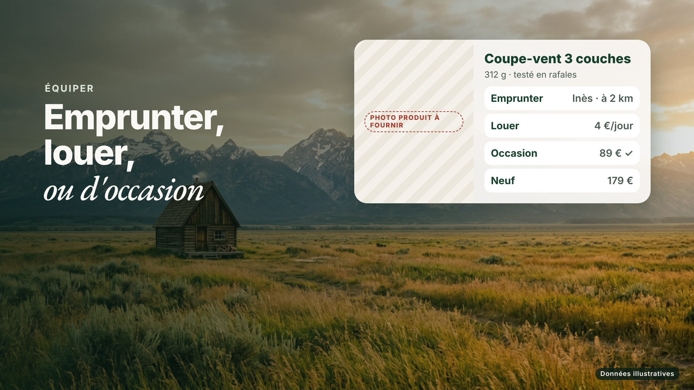
09: Le coupe-vent, d'occasion partiel
18,75 à 20,62 s
La fiche produit complète ; quatre façons de l'avoir, du prêt entre voisins au neuf ; Léa prend l'occasion.
À lire le produit (0,2-0,7 s) ; « Occasion · 89 € » (0,7-1,8 s)
Son clic
Source « Emprunter · Louer · Acheter », occasion (`/api/produit/occasion-check`) ; boutique non routée = partiel ; photo produit à fournir
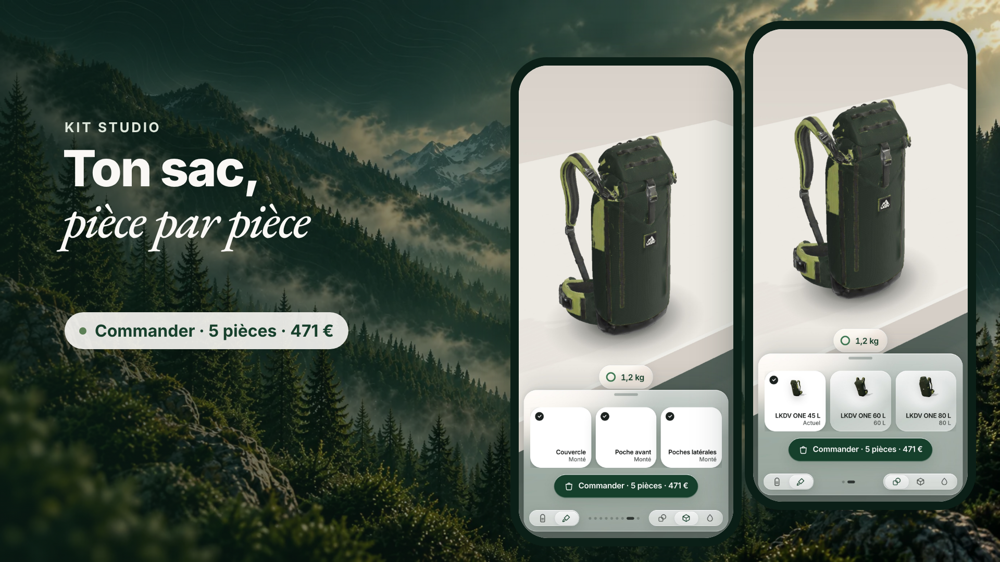
10: Kit Studio réel
20,62 à 24,38 s
TEMPS FORT 1 : le sac 3D, un module clipsé à chaque temps de la mesure, le coloris change ; raccord du sac 3D au même sac sur le dos de Léa.
À lire « Ton sac, pièce par pièce » (0,4-1,6 s) ; quatre modules sur les temps (1,9-3,7 s)
Son whoosh ; quatre clics sur les temps
Source vrais `.glb` du Kit Studio ; raccord sac au dos = photo à tourner ou sourcer
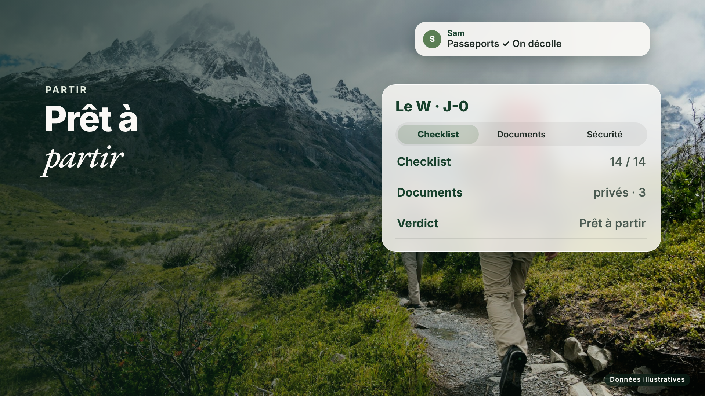
11: J-0 capture à faire
24,38 à 26,25 s
Le hub du voyage : tout est coché, les papiers restent privés ; le verdict passe à « Prêt à partir ».
À lire « Prêt à partir » (0,4-1,8 s)
Son son de message
Source hub de sortie (`hubSectionRegistry.ts`) ; verdict du Compas ; capture à faire
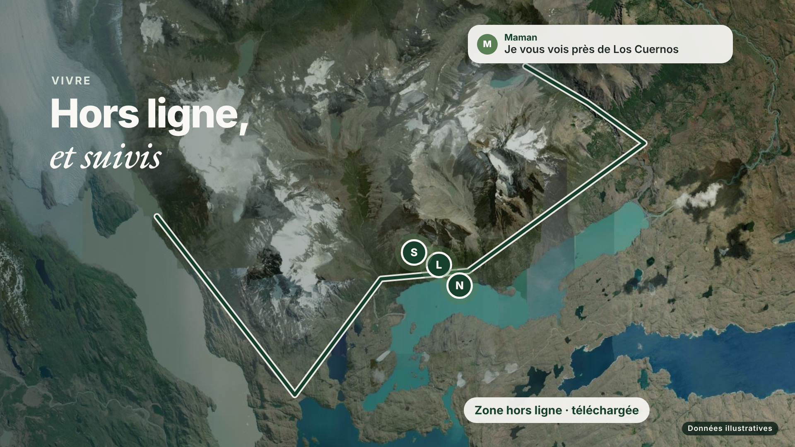
12: L'équipage en direct capture à faire
26,25 à 28,12 s
Sur la trace, trois points avancent en direct ; la zone est téléchargée ; Maman suit le lien de partage.
À lire les trois points (0,2-1,0 s) ; message de Maman (1,0-1,8 s)
Son son de message
Source partage de position en direct, `/live/[token]`, Explorer « Hors ligne » ; captures à faire (zone réellement téléchargée)
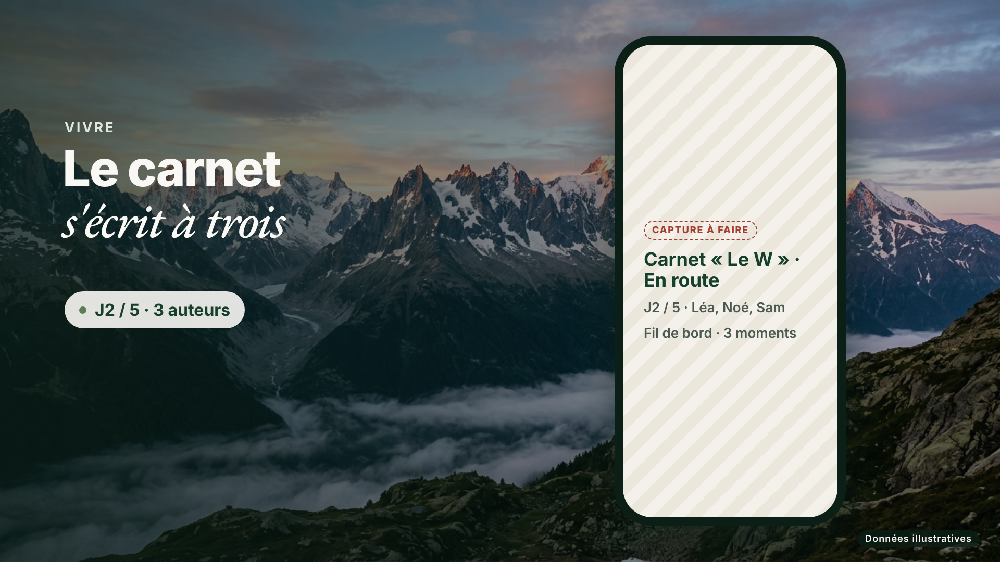
13: Le carnet à trois capture à faire
28,12 à 30 s
Chacun poste ses moments dans le même carnet : photo, altitude, rencontre ; le fil se remplit à trois mains.
À lire « J2 / 5 · 3 auteurs » (0,2-1,8 s)
Son un pop par moment
Source carnet « Fil de bord » réel ; carnet de démo à trois auteurs à créer
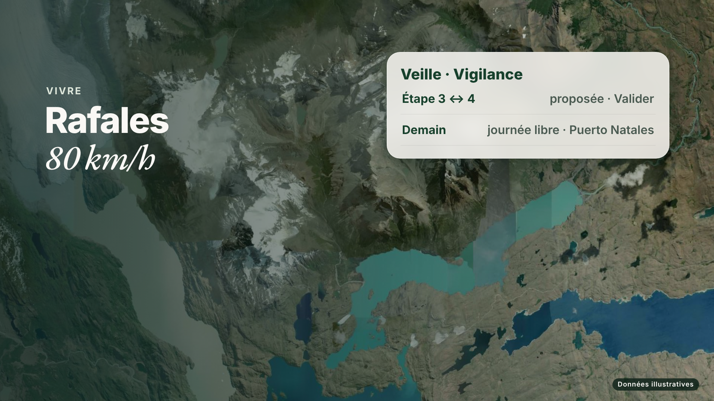
14: Le plan B partiel
30 à 31,88 s
La veille annonce les rafales ; Léa valide l'inversion des étapes : demain, journée libre en ville. (Le coupe-vent servira.)
À lire « Rafales 80 km/h » (0,2-0,8 s) ; « Valider » (0,8-1,8 s)
Son souffle ; clic
Source Verdict « Veille » (MET Norway) et éditeur de parcours réels ; proposition automatique = partiel (montrée comme le geste de Léa)
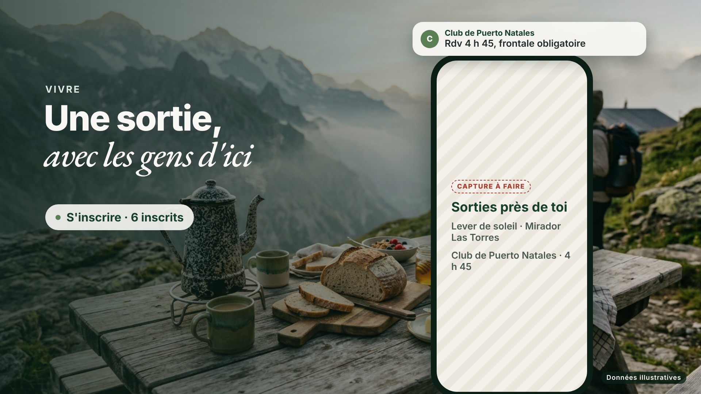
15: Le club du coin partiel
31,88 à 33,75 s
Le jour libre, Léa cherche une sortie autour d'elle : un club local part au lever du soleil ; le groupe s'inscrit. Dernière demi-mesure : silence, le vent seul.
À lire la sortie (0,2-1,0 s) ; « S'inscrire » (1,0-1,4 s)
Son clic ; son de message ; demi-mesure de silence (vent)
Source clubs, sorties et « S'inscrire » réels ; recherche par position = partiel ; club fictif
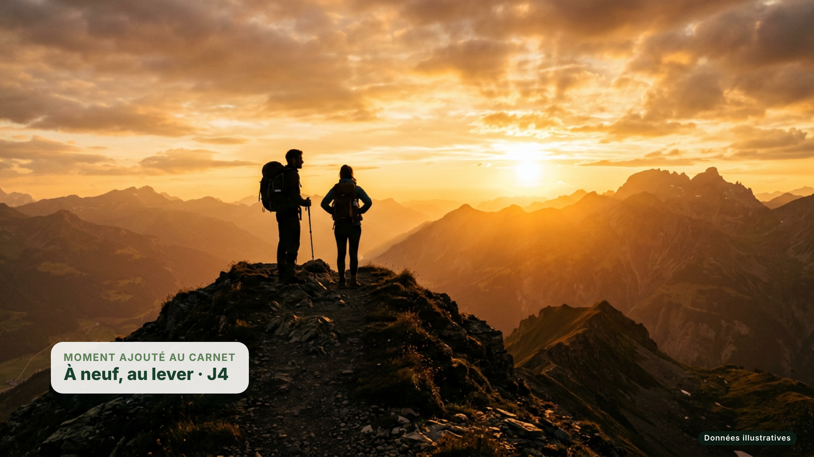
16: Le lever de soleil réel
33,75 à 39,38 s
TEMPS FORT 2 : la musique repart pleine sur la photo plein cadre, même cadrage que le post de Maya, mais à neuf ; le moment se range dans le carnet.
À lire la photo (0-2,0 s) ; « À neuf, au lever » (2,0-5,6 s)
Son la musique repart, pleine
Source photo libre de neuf personnes au lever sur les Torres à sourcer (cadrage du post de Maya)
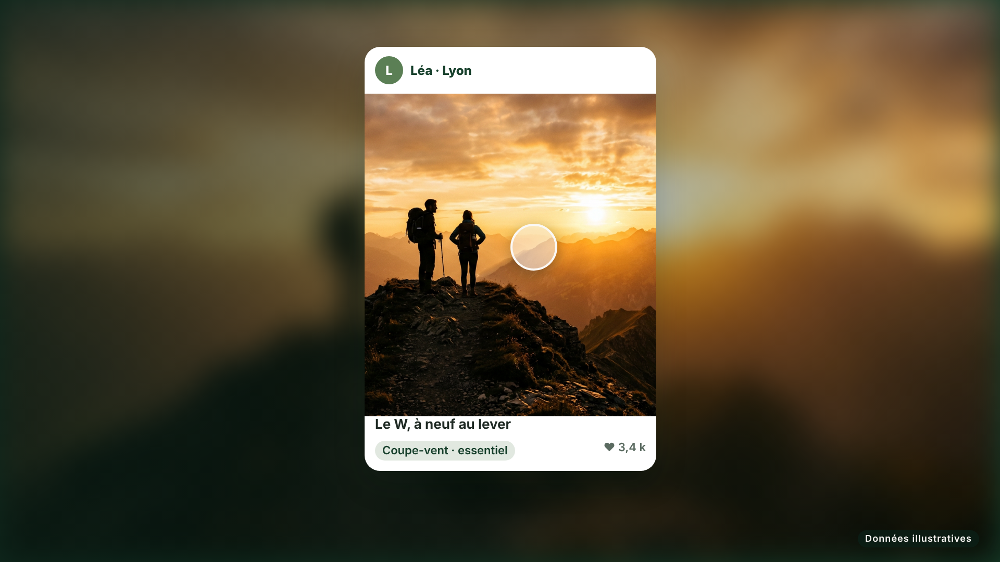
17: Kenji, à Osaka réel
39,38 à 41,25 s
RIME 2 : à Osaka, le pouce de Kenji touche le post de Léa ; on lit la preuve terrain « Coupe-vent · essentiel ».
À lire « Coupe-vent · essentiel » (0,4-1,8 s)
Son tap
Source post communauté ; verdicts du sac (`prod3/10-sac-verdicts.png`) ; personnes fictives
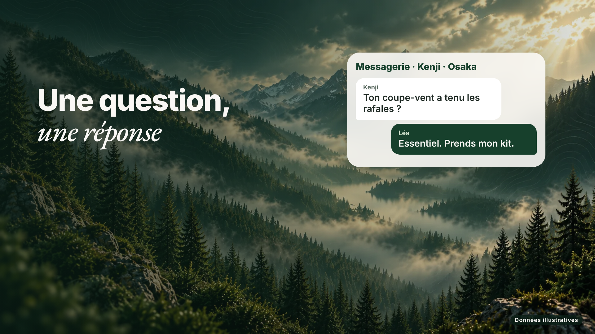
18: La réponse capture à faire
41,25 à 43,12 s
Kenji écrit à Léa ; elle répond et lui partage son kit.
À lire la question (0,2-0,9 s) ; la réponse (0,9-1,8 s)
Son deux sons de message
Source `/messagerie` ; capture à faire
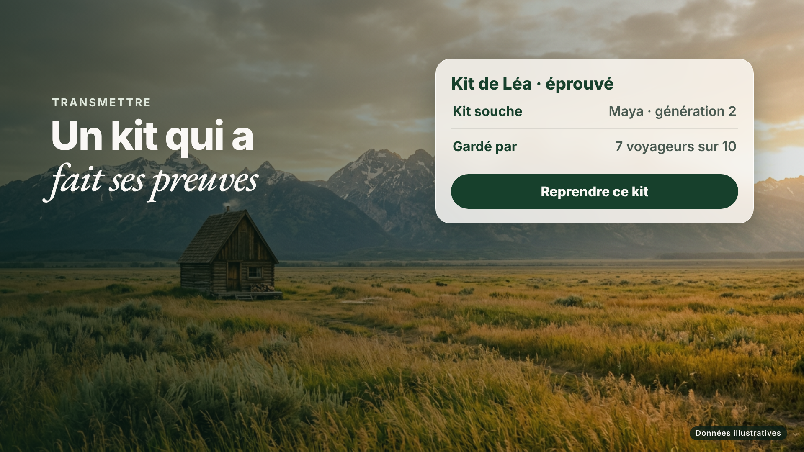
19: La lignée capture à faire
43,12 à 45 s
Le kit de Léa descend de celui de Maya ; Kenji le reprend.
À lire « Kit souche : Maya » (0,2-1,0 s) ; « Reprendre ce kit » (1,0-1,8 s)
Son pop
Source lignées de kits (vocabulaire public de CLAUDE.md) ; capture à faire
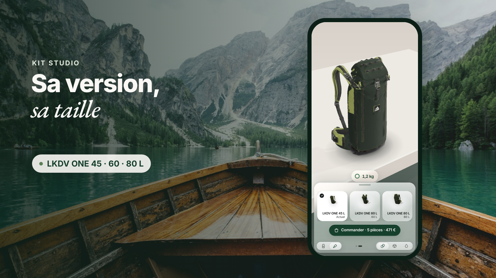
20: Sa version capture à faire
45 à 46,88 s
Dans le Kit Studio, Kenji passe au coloris « Nuit », retire un module : le poids change ; c'est sa version du kit de Léa.
À lire « Nuit » (0,4-1,0 s) ; le poids (1,0-1,8 s)
Son clic
Source Kit Studio réel 📷 `docs/kit-studio/captures/walkthrough-07-color-sauge.png` ; coloris « Nuit » à capturer
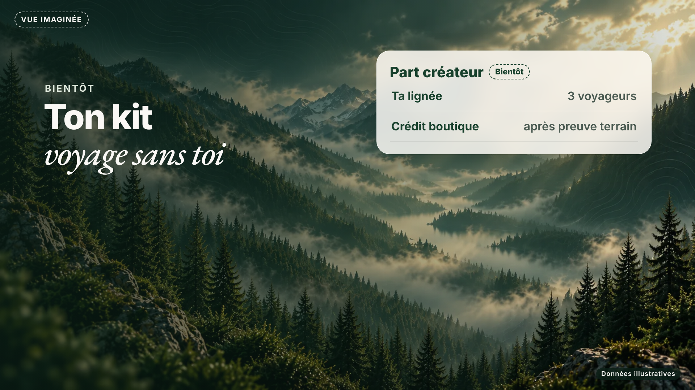
21: La part créateur vision
46,88 à 48,75 s
Léa reçoit une notification : son kit a été repris ; la part créateur arrivera (marquée « Bientôt »).
À lire « Bientôt » (0,2-0,8 s) ; « après preuve terrain » (0,8-1,8 s)
Son son de notification
Source part créateur affichée « bientôt » dans l'app = vision, marquée comme telle
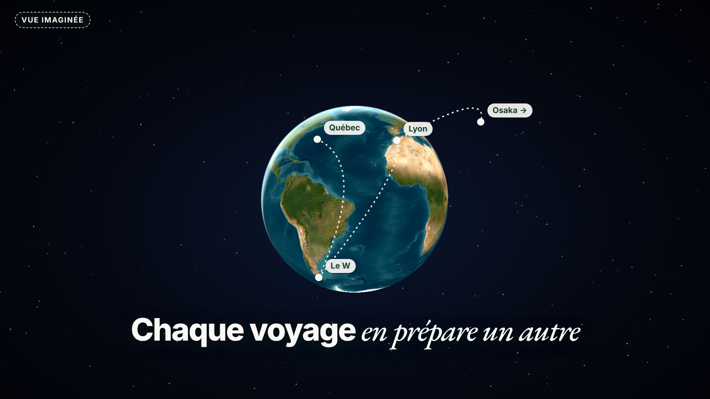
22: Québec · Lyon · Osaka vision
48,75 à 54,38 s
Le globe : trois points (Québec, Lyon, Osaka) reliés par la lignée du kit, le W en Patagonie ; dernier plan : Kenji pose le pied sur son sentier, sac Nuit au dos.
À lire « Chaque voyage » (0,4-1,8 s) ; « en prépare un autre » (1,8-5,6 s)
Son montée
Source vue imaginée = vision (marquée « vue imaginée ») ; plan de Kenji = photo à tourner ou sourcer

23: LKDV réel
54,38 à 60 s
Le badge arrive comme une boussole qui se cale ; « Le Kit du Voyageur » ; « Préparer · Explorer · Partager ». Adresse et stores seulement s'ils sont confirmés.
À lire le badge (0-1,0 s) ; le nom (1,0-2,5 s) ; l'adresse (2,5-5,6 s)
Son impact sous le badge ; fondu 1,5 s
Source `public/logo.png` ; adresse et stores à confirmer avant rendu